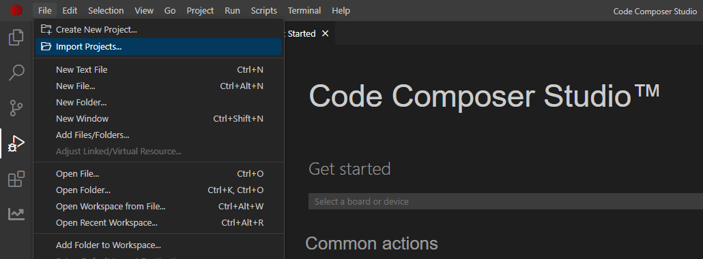
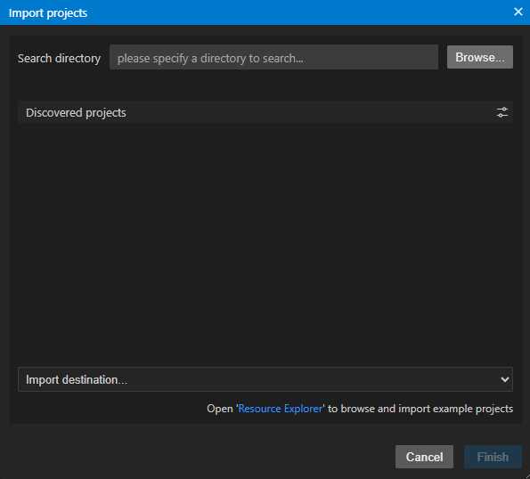
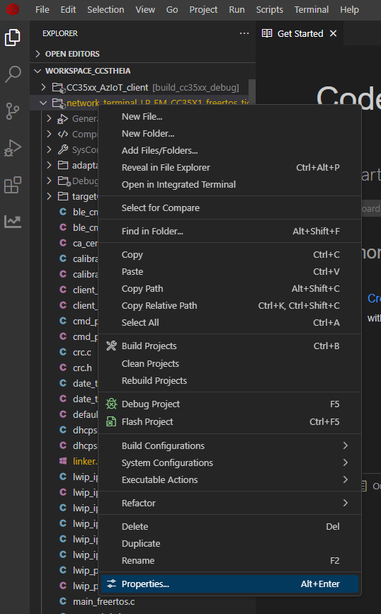
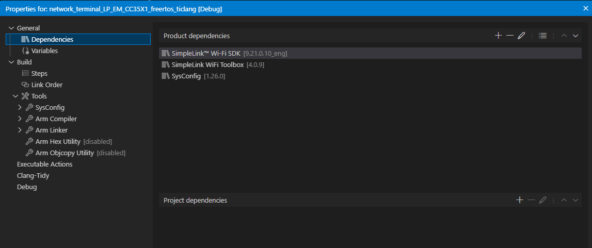
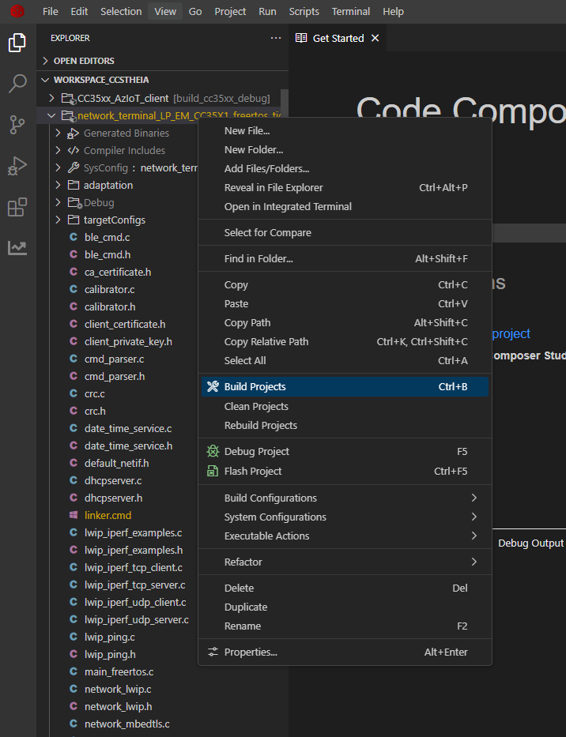
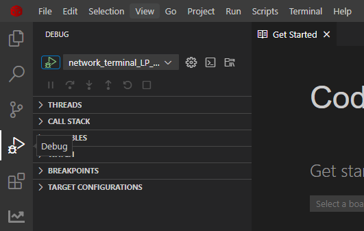
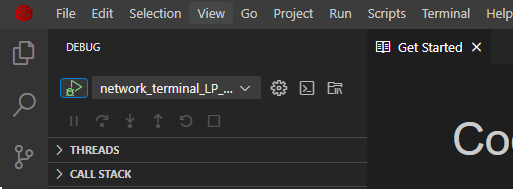
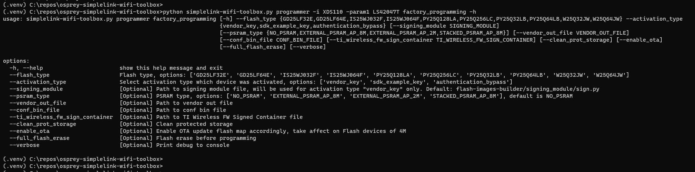

Creating and Flashing Image¶
The following section explains how to build and flash an image onto the CC35xx using either Code Composer Studio or through the WiFi Toolbox Command Line Interface (CLI)
Code Composer Studio CCS
First import a Project by going to File → Import Projects
{kind=link}

Fig. 24 Import Project
Browse for the example
{kind=link}

Fig. 25 Browse Examples
Make sure to select workspace as the import destination
- Verify the correct version of SimpleLink Wifi Toolbox, Sysconfig, and Simplelink_Wifi_SDK are in the product dependencies.
- Right click on the Project and navigate to Properties
{kind=link}

Fig. 26 Project Properties
In the Project Properties go to General → Dependencies → Product Dependencies
{kind=link}

Fig. 27 Product Dependencies
Build the Imported Project by right clicking on the project and clicking on Build Projects
{kind=link}

Fig. 28 Building Project
Debug the Project by clicking on the debug Icon
{kind=link}

Fig. 29 Start Debug
Then choose the correct project from the drop down list and press the Green play icon
{kind=link}

Fig. 30 Start debugging instance.
This will begin flashing the device with the image and start the debugger
Simplelink Wifi Toolbox CLI
The Wi-Fi toolbox command line interface provides commands that allow you to build programming image binary files, activate your device etc.
For any command that requires activation type, signing module etc, please note that the activation_type default setting is “sdk_example_key” and the signing_module will only be used for activation type “vendor_key” and has a default path “flash-images-builder/signing_module/sign.py”, so you have to specify the path if the script is a different name or somewhere else.
If you haven’t updated the signing module Python script when needed, you will see this warning:

Here is the factory programming command. If successful, the device will be running network terminal.

./simplelink-wifi-toolbox.exe programmer -i XDS110 -param1 <XDS110 NUMBER> factory_programming --flash_type 'IS25WJ032F' --activation_type 'sdk_example_key'
Flash erase command:

./simplelink-wifi-toolbox.exe programmer -i XDS110 -param1 <XDS110 NUMBER> full_flash_erase --flash_type 'IS25WJ032F' --activation_type 'sdk_example_key'
Below are examples of commands to conduct certain operations for a CC35xx device that was activated using the ‘sdk_example_key’ and developing with the network terminal.
The following code will build and sign the programming image with the files created by Syscfg
`SIMPLELINK_WIFI_TOOLBOX_INSTALL_DIR`/simplelink-wifi-toolbox flash-images-builder build programming_image --flash_memory_config "workspace_ccstheia/network_terminal_LP_EM_CC35X1_freertos_ticlang/Debug/syscfg/external_memory_configurator.json" --fuses_programming_instructions "`SIMPLELINK_WIFI_TOOLBOX_INSTALL_DIR`/programmer/activation_and_initial_programming/jsons/authentication_bypass/fuse_prog_inst_param.CC35XXE.json" --activation_type 'sdk_example_key' --signing_module `SIMPLELINK_WIFI_TOOLBOX_INSTALL_DIR`/flash-images-builder/signing_module/sign.py --dir_out_path "workspace_ccstheia/network_terminal_LP_EM_CC35X1_freertos_ticlang/Debug/toolbox"
`SIMPLELINK_WIFI_TOOLBOX_INSTALL_DIR`/simplelink-wifi-toolbox flash-images-builder sign programming_image --unsign_image workspace_ccstheia/network_terminal_LP_EM_CC35X1_freertos_ticlang/Debug/toolbox/programming_instructions_image.unsign.bin --activation_type 'sdk_vendor_key' --signing_module `SIMPLELINK_WIFI_TOOLBOX_INSTALL_DIR`/flash-images-builder/signing_module/sign.py --dir_out_path workspace_ccstheia/network_terminal_LP_EM_CC35X1_freertos_ticlang/Debug/toolbox
The following code will send the CC35xx action requests that will allow programming and debugging the MCU
`SIMPLELINK_WIFI_TOOLBOX_INSTALL_DIR`/simplelink-wifi-toolbox flash-images-builder build action_request --type programming --params_json "workspace_ccstheia/network_terminal_LP_EM_CC35X1_freertos_ticlang/Debug/syscfg/action_params.json" --dir_out_path "workspace_ccstheia/network_terminal_LP_EM_CC35X1_freertos_ticlang/Debug/toolbox"
`SIMPLELINK_WIFI_TOOLBOX_INSTALL_DIR`/simplelink-wifi-toolbox flash-images-builder sign action_request --unsign_request "workspace_ccstheia/network_terminal_LP_EM_CC35X1_freertos_ticlang/Debug/toolbox/programming_action_request.unsign.bin" --activation_type 'sdk_vendor_key' --signing_module "`SIMPLELINK_WIFI_TOOLBOX_INSTALL_DIR`/flash-images-builder/signing_module/sign.py" --dir_out_path "workspace_ccstheia/network_terminal_LP_EM_CC35X1_freertos_ticlang/Debug/toolbox"
`SIMPLELINK_WIFI_TOOLBOX_INSTALL_DIR`/simplelink-wifi-toolbox flash-images-builder build action_request --type debug --params_json "workspace_ccstheia/network_terminal_LP_EM_CC35X1_freertos_ticlang/Debug/syscfg/action_params.json" --dir_out_path "workspace_ccstheia/network_terminal_LP_EM_CC35X1_freertos_ticlang/Debug/toolbox"
`SIMPLELINK_WIFI_TOOLBOX_INSTALL_DIR`/simplelink-wifi-toolbox flash-images-builder sign action_request --unsign_request "workspace_ccstheia/network_terminal_LP_EM_CC35X1_freertos_ticlang/Debug/toolbox/debug_action_request.unsign.bin" --activation_type 'sdk_vendor_key' --signing_module "`SIMPLELINK_WIFI_TOOLBOX_INSTALL_DIR`/flash-images-builder/signing_module/sign.py" --dir_out_path "workspace_ccstheia/network_terminal_LP_EM_CC35X1_freertos_ticlang/Debug/toolbox"
The following code will build and sign overall vendor image
`SIMPLELINK_WIFI_TOOLBOX_INSTALL_DIR`/simplelink-wifi-toolbox flash-images-builder build vendor_image --vendor_out_file "workspace_ccstheia/network_terminal_LP_EM_CC35X1_freertos_ticlang/Debug/network_terminal_LP_EM_CC35X1_freertos_ticlang.out" --dir_out_path "workspace_ccstheia/network_terminal_LP_EM_CC35X1_freertos_ticlang/Debug/toolbox" --version "$(primary_vendor_image_version)" --output_file_name "primary_vendor_image.bin"
`SIMPLELINK_WIFI_TOOLBOX_INSTALL_DIR`/simplelink-wifi-toolbox flash-images-builder sign vendor_image --unsign_image "workspace_ccstheia/network_terminal_LP_EM_CC35X1_freertos_ticlang/Debug/toolbox/primary_vendor_image.unsign.bin" --activation_type 'sdk_vendor_key' --signing_module "`SIMPLELINK_WIFI_TOOLBOX_INSTALL_DIR`/flash-images-builder/signing_module/sign.py" --dir_out_path "workspace_ccstheia/network_terminal_LP_EM_CC35X1_freertos_ticlang/Debug/toolbox"